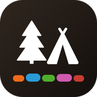

Plugins for Jellyfin. Add one link to your server to install and update them.
https://ahouseofbards.github.io/Campground-Jellyfin/manifest.json
Requires Jellyfin 10.11 or later.
Profiles for Jellyfin. One account holds several people, each with their own watch history, library access and parental controls.
Playback for Jellyfin. Starts fast, plays the original file when the connection allows it, and changes quality smoothly when it doesn't.
Recommendations for Jellyfin. Picks for each person that change as they watch, in every Jellyfin app.
Game streaming for Jellyfin. Play the games on your server from Jellyfin apps.
Remote access for Jellyfin. One guided setup in the dashboard for a web address, a certificate, the router and Jellyfin's own settings.
Planned plugins appear in the catalog once they have a stable release. This repository offers stable versions only; Bonfire betas are published separately.